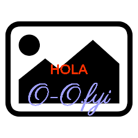

Tenemos una macro p5gen que genera imagenes o videos con sketches de p5js.
Los sketches se pueden parametrizar pasando un diccionario como parámetro.
Por ejemplo si en el frontmatter o yaml de una página pones dentro de data un diccionario images_gen donde la clave es el nombre de archivo y el valor los parametros podés generar logos, detalles y lo que necesites.
Las tipografías tienen que estar todas en la carpeta l1b_/any/fonts
El lenguaje del sketch "logo"
La entrada text lleva una lista de textos que pueden tener parametros
- x,y de la posicion: como si la imagen midiera 100x100 o sea que 50,50 es el centro.
- A (lineacion) y la inicial de la constante en p5js
- horizontal: Left, Center, Right
- vertical: Top, Center, Botom, y _ para Baseline
- S y el tamaño del texto, también proporcional a la altura de la imàgen (100 es todo el alto)
- C y un color ej en hexadecimal como en css
- F y el nombre de una tipografia (Helvetica para volver al default)
:y a continuación el texto que querés.
De ese modo podés armar lo que necesites pegando pedacitos de texto de distinto tamaño en distinto lugar.
Por ejemplo poniendo en el frontmatter de esta página
data:
images_gen:
"ejemplo.png": #A: si no le pongo un path va a la misma carpeta que este archivo
images:
bg: "l1b_/any/images/placeholder.png"
text:
- "50,50 ACC S10 C#ff3000 FHelvetica:HOLA"
- "50,70 ACC S20 C#a0a0ff Fparisienne:O-O.fyi"
Se genero 
El código
IMAGE <img src="/{% p5gen {
'fname': 'ximg.png',
'images': {'bg':'l1b_/any/images/placeholder.png'},
'text': [
'50,50 ACC S10 C#ff3000 FHelvetica:HOLA',
'50,70 ACC S20 C#a0a0ff Fparisienne:O-O.fyi'
]
}
%}">
Da como resultado
IMAGE 
Como usarlo en una página como index.njk
#(extraido de wip_/celia/index.njk)
data:
reuse:
logo: &logo #A: un "anchor" de yaml, para no repetir estos datos
sketch: logo #A: cada tipo de sketch puede hacer cosas distintas con distintos parámetros
width: 800 #A: se puede especificar `width` y `height` de la imagen final
font: parisienne
text: #U: para el sketch logo los parámetros se especifican así. Los explico abajo
- "2,50ALCS80:🌖" # SEE: https://emojipedia.org/chart-increasing
- "35,40AL_S43:Agua"
- "37,45ALTS45:de Luna"
images_gen:
images/logo-dark.png:
<<: *logo #A: usar aqui los mismos datos que tienen el "anchor" logo
color: "#FF7F3E"
bgcolor: "#ffffff"
images/logo-light.png:
<<: *logo
color: "#ffffff"
bgcolor: "#FF7F3E"